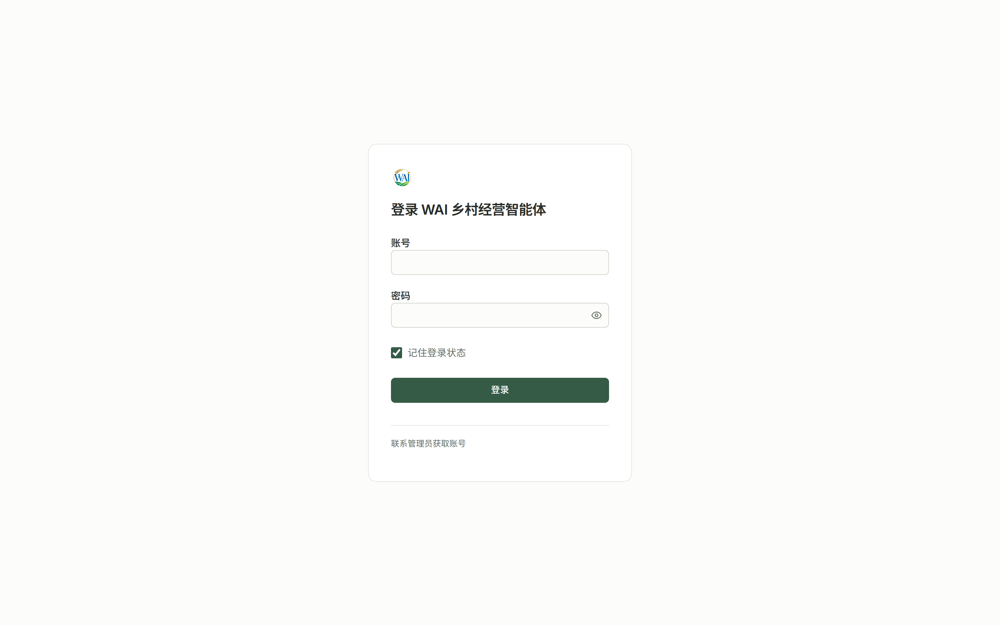
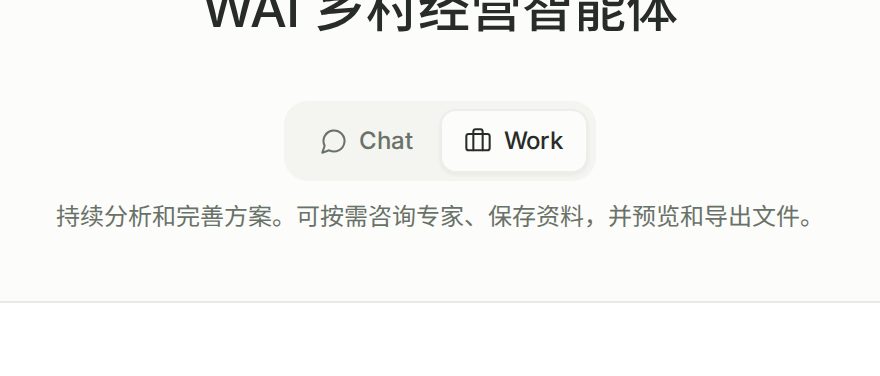
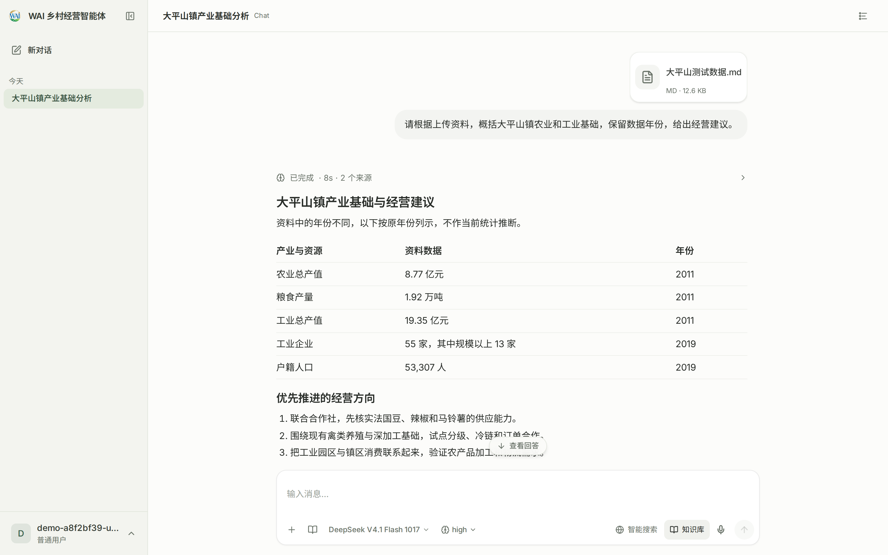

入门
快速开始
第一次使用，建议拿手头一份真实材料试一遍：上传，提问，看回答怎样引用你的数据。下面四步即可完成。
#开始之前
你需要管理员提供的系统地址和账号、密码。系统不开放自行注册。
#第一步：登录
- 用浏览器打开系统地址。
- 输入账号和密码，点「登录」。
登录后进入主界面：左侧是历史对话，中间是对话区。

详见登录与界面。
#第二步：新建对话并选择工作方式
点左侧栏的「新对话」。对话区中央有 Chat 和 Work 两个标签：
| 工作方式 | 适合 |
|---|---|
| Chat | 单个问题、读一份文件、改写文字 |
| Work | 需要从资源、政策、财务、风险等多个角度分析，或需要交付一份报告 |
点一个标签。不确定时，选 Chat。工作方式在新建对话时选定，之后这段对话沿用。

#第三步：准备材料，写问题，发送
在输入框里：
- 需要时添加材料。 点 + 上传文件或图片。需要最新政策或行情，打开「智能搜索」；需要公共政策和案例，打开「知识库」。
- 选择模型和思考强度。 不确定时保持默认。
- 写下问题。 说清楚要判断什么、已有什么条件、结果给谁用。
- 发送。 按
Enter，或点向上箭头。

#第四步：查看回答
助手先工作，再给出回答。
- 过程区显示助手正在做什么：思考、调用工具。
- 正文是最终回答。
- 参考来源列出回答引用的材料。
- 右侧的会话详情集中显示本轮的文件、任务、专家和来源。
